مفصل الوركHip Joint
عملي · م05 · 9.4 دقيقةأقسام المحاضرة (11)
- مقدمة وقائمة فحص المفصلIntroduction & Joint Checklist
- أنواع المفاصلTypes of Joints
- مفصل الورك: التشريح والنقاط الرئيسةHip Joint – Anatomy & Key Points
- كبسولة مفصل الوركCapsule of the Hip Joint
- أربطة مفصل الوركHip Joint Ligaments
- الملامح الشعاعيةRadiological Features
- المعالم التشريحية للوركAnatomic Landmarks of the Hip
- زاوية المركز–الحافة الجانبيةLateral Center–Edge Angle (LCEA)
- خط شنتونShenton Line
- خلع الورك الخلقيCongenital Hip Dislocation (DDH)
- خلع الورك المكتسبAcquired Hip Dislocation
مقدمة وقائمة فحص المفصلIntroduction & Joint Checklist
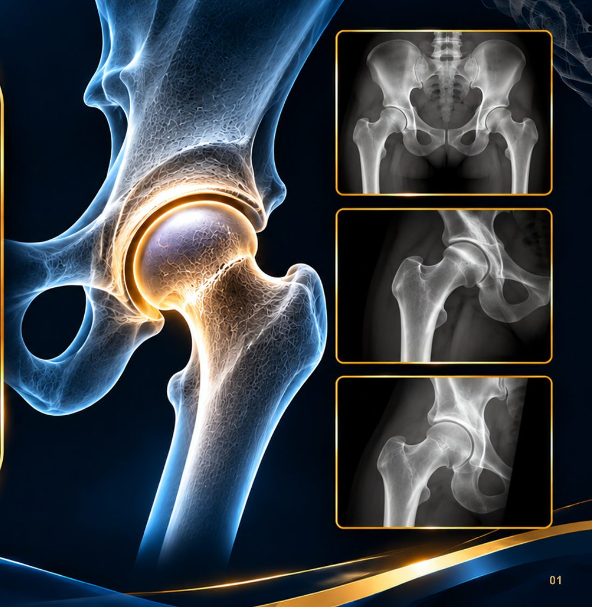
ماذا يجب أن نعرف عن أي مفصل؟WHAT SHOULD WE KNOW ABOUT ANY JOINT?
A simple anatomy & radiology checklist
قائمة فحص بسيطة في التشريح والأشعة.
- 1. Type of joint: How the joint is classified.نوع المفصل: كيف يُصنَّف المفصل.
- 2. Articulating bones: The bones that meet to form the joint.العظام المكوِّنة للمفصل: العظام التي تلتقي لتكوين المفصل.
- 3. Articular surfaces: The bone surfaces in contact at the joint.الأسطح المفصلية: أسطح العظام المتلامسة عند المفصل.
- 4. Capsule & ligaments: Tissues that enclose and support the joint.الكبسولة والأربطة: الأنسجة التي تحيط بالمفصل وتدعمه.
- 5. Movements: The directions the joint can move.الحركات: الاتجاهات التي يستطيع المفصل الحركة فيها.
- 6. Stability: Features that keep the joint in place.الثبات: الخصائص التي تُبقي المفصل في مكانه.
- 7. Radiological views & normal alignment: How the joint normally appears on imaging.الإسقاطات الشعاعية والمحاذاة الطبيعية: كيف يظهر المفصل طبيعياً في التصوير.
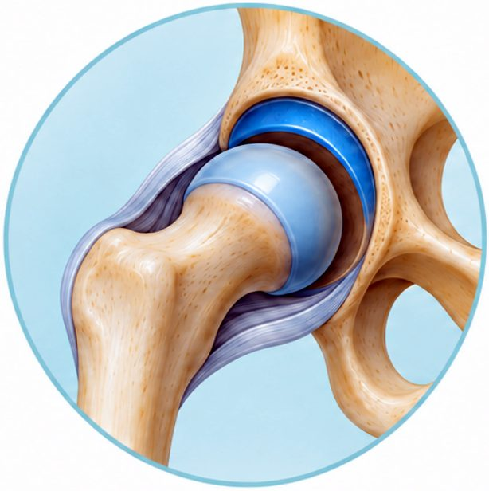
أنواع المفاصلTypes of Joints
أنواع المفاصل – نقاط رئيسةTYPES OF JOINTS – KEY POINTS
1- المفاصل الليفية1. Fibrous Joints
- • Connected by fibrous tissue.ترتبط بنسيج ليفي.
- • Movement: Little or none.الحركة: قليلة أو معدومة.
- • Example: Skull sutures.مثال: دروز الجمجمة.
2- المفاصل الغضروفية2. Cartilaginous Joints
- • Connected by cartilage.ترتبط بغضروف.
- • Movement: Slight.الحركة: طفيفة.
- • Example: Pubic symphysis.مثال: الارتفاق العاني.
3- المفاصل الزليلية3. Synovial Joints
- • Have a synovial fluid-filled cavity.فيها تجويف مملوء بالسائل الزليلي.
- • Movement: Freely movable.الحركة: حرة.
- • Example: Hip joint.مثال: مفصل الورك.
أنواع المفاصل الزليلية وأمثلتهاSYNOVIAL JOINT TYPES & EXAMPLES
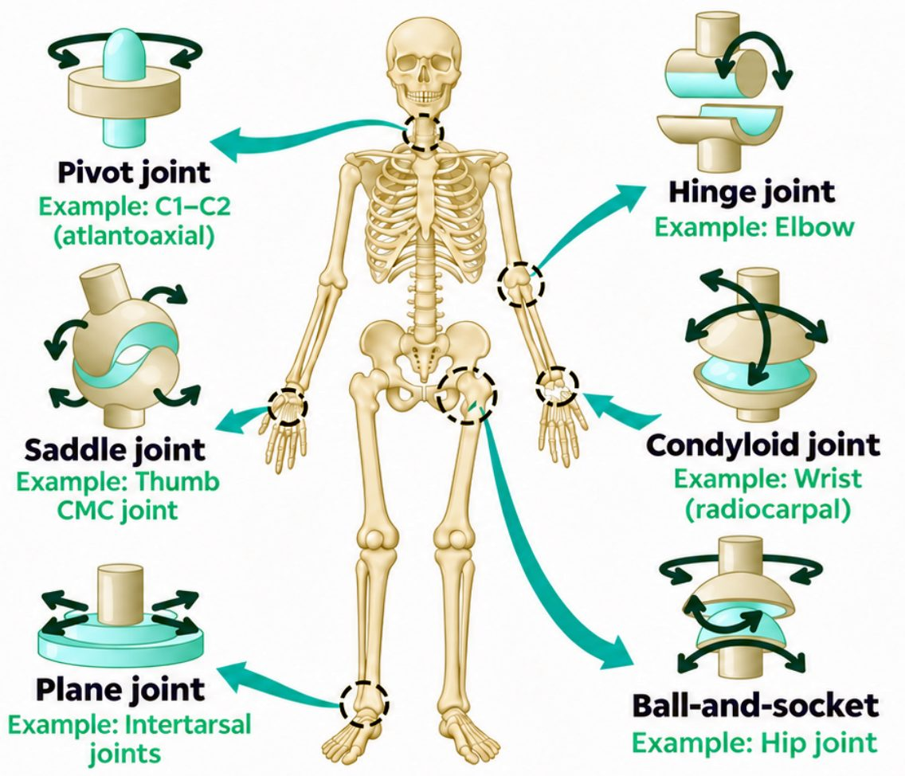
- • Pivot joint: Example: C1–C2 (atlantoaxial)المفصل المحوري: مثال: C1–C2 (الأطلسي المحوري).
- • Hinge joint: Example: Elbowالمفصل الرزّي: مثال: المرفق.
- • Saddle joint: Example: Thumb CMC jointالمفصل السرجي: مثال: المفصل الرسغي السنعي للإبهام.
- • Condyloid joint: Example: Wrist (radiocarpal)المفصل اللقمي: مثال: الرسغ (الكعبري الرسغي).
- • Plane joint: Example: Intertarsal jointsالمفصل الانزلاقي: مثال: المفاصل بين عظام رصغ القدم.
- • Ball-and-socket: Example: Hip jointالمفصل الكروي: مثال: مفصل الورك.
مفصل الورك: التشريح والنقاط الرئيسةHip Joint – Anatomy & Key Points
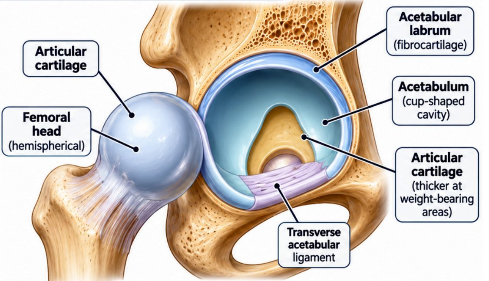
مفصل الورك – النقاط الرئيسةHip Joint – Key Points
- • Type: Ball-and-socket synovial joint.النوع: مفصل زليلي من النوع الكروي (كرة وحُقّ).
- • Articulation: Femoral head + Acetabulum.التمفصل: رأس عظم الفخذ + الحُقّ.
- • Main functions: Stability and weight-bearing.الوظائف الرئيسة: الثبات وتحمّل الوزن.
الأسطح المفصليةArticulating Surfaces
- • Acetabulum: Cup-shaped cavity of the pelvis.الحُقّ: تجويف على شكل كأس في الحوض.
- • Acetabular labrum: Fibrocartilage that deepens the acetabulum.الشفا الحُقّي: غضروف ليفي يعمّق الحُقّ.
- • Femoral head: Hemispherical, fits into the acetabulum.رأس عظم الفخذ: نصف كروي، ويستقر داخل الحُقّ.
- • Articular cartilage: Thicker in weight-bearing areas.الغضروف المفصلي: أسمك في مناطق تحمّل الوزن.
مواضع ارتباط كبسولة المفصلJoint Capsule Attachments
- • Proximally: Acetabular rim.في الجهة القريبة (الدانية): حافة الحُقّ.
- • Distally:في الجهة البعيدة:
- • Anterior → Intertrochanteric line.الأمامية: الخط بين المدوّرين.
- • Posterior → Femoral neck.الخلفية: عنق عظم الفخذ.
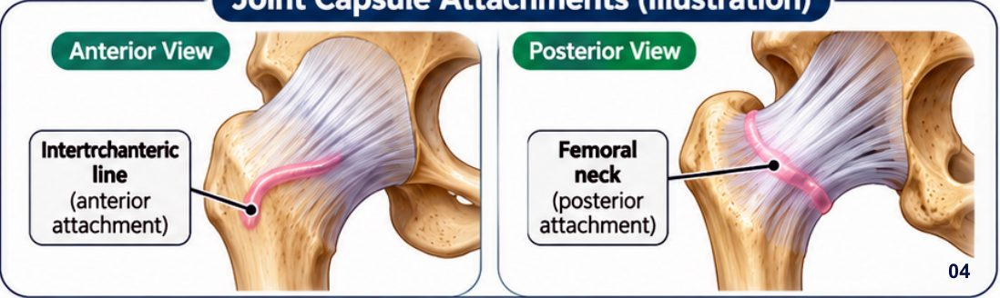
كبسولة مفصل الوركCapsule of the Hip Joint
كبسولة مفصل الوركCAPSULE OF THE HIP JOINT
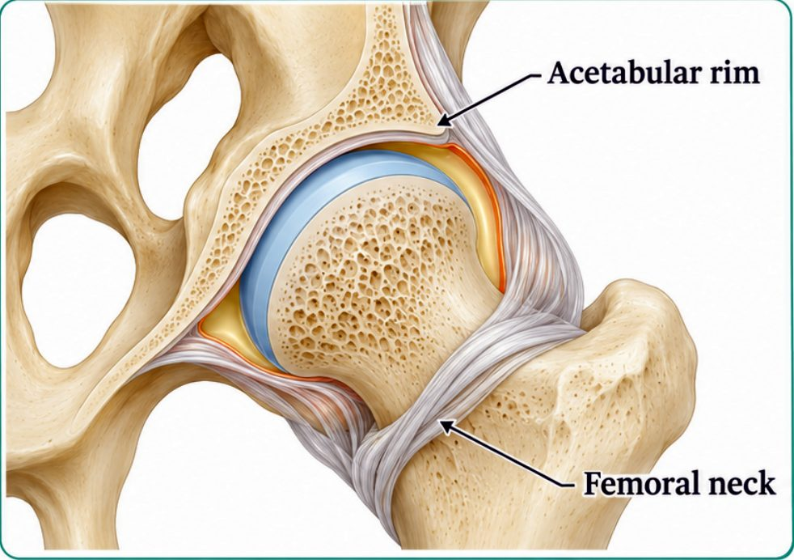
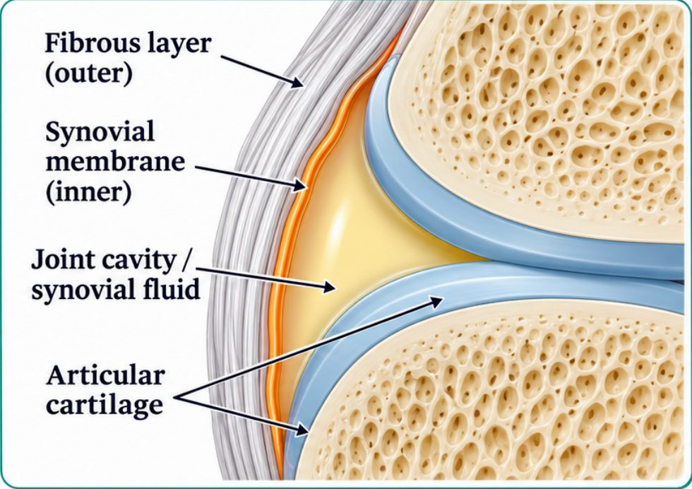
كبسولة الورك – النقاط الرئيسةHIP CAPSULE – KEY POINTS
- • Definition: Strong fibrous capsule surrounding the hip joint.التعريف: كبسولة ليفية قوية تحيط بمفصل الورك.
- • Attachments: Acetabulum → Femoral neck.مواضع الارتباط: من الحُقّ إلى عنق عظم الفخذ.
- • Function: Provides stability while allowing movement.الوظيفة: تمنح الثبات مع السماح بالحركة.
طبقتانTWO LAYERS
- • Fibrous layer (outer): Thick, strong connective tissue for stability.الطبقة الليفية (الخارجية): نسيج ضام سميك وقوي للثبات.
- • Synovial membrane (inner): Produces synovial fluid for lubrication and cartilage nutrition.الغشاء الزليلي (الداخلي): ينتج السائل الزليلي للتزليق وتغذية الغضروف.
أربطة مفصل الوركHip Joint Ligaments
أربطة مفصل الورك – النقاط الرئيسةHIP JOINT LIGAMENTS – KEY POINTS
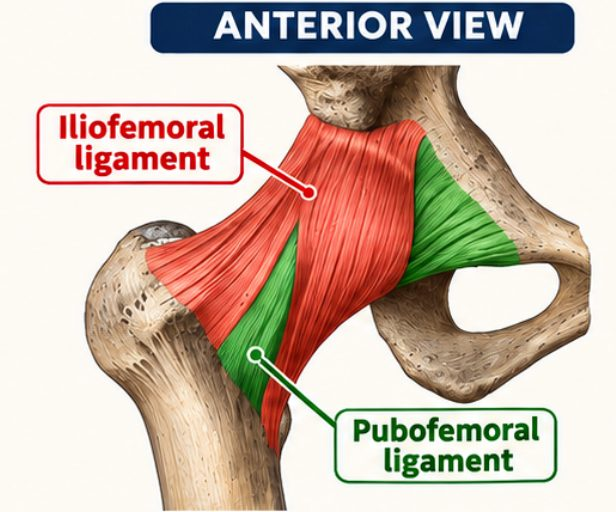
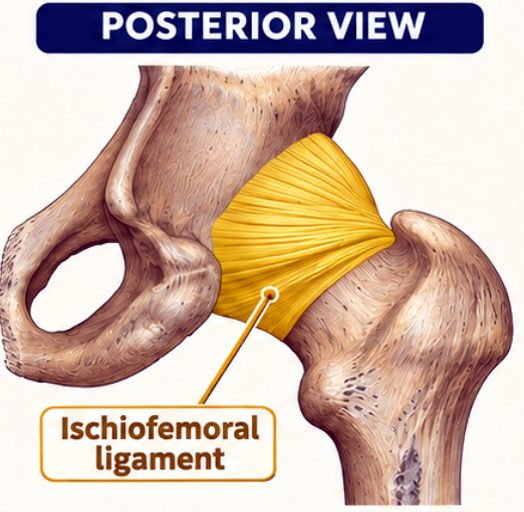
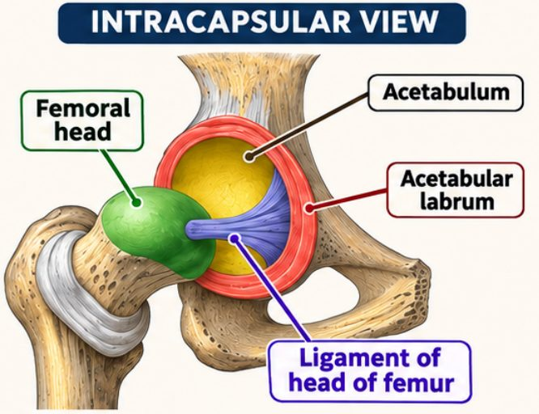
Main Function: Reinforce the joint capsule and increase hip stability.
الوظيفة الرئيسة: تقوية كبسولة المفصل وزيادة ثبات الورك.
1) داخل الكبسولة1. INTRACAPSULAR
- • Ligament of Head of Femur (Ligamentum Teres)رباط رأس عظم الفخذ (الرباط المدوّر)
- • Attachment: Acetabular fossa → Fovea of femoral head.الارتباط: الحفرة الحُقّية ← نُقرة رأس عظم الفخذ.
- • Contains: Branch of obturator artery (minor blood supply).يحتوي: فرعاً من الشريان السدّادي (تروية دموية ثانوية).
أ) الرباط الحرقفي الفخذيA. ILIOFEMORAL
- • Attachment: AIIS → Intertrochanteric line.الارتباط: من الشوكة الحرقفية الأمامية السفلية إلى الخط بين المدوّرين.
- • Shape: Y-shaped.الشكل: على هيئة حرف Y.
- • Reinforces: Anterior joint capsule.يعزّز: الكبسولة الأمامية للمفصل.
- • Function: Prevents hyperextension.الوظيفة: يمنع فرط البسط.
- • Key Fact: Strongest hip ligament.معلومة مهمة: أقوى رباط في الورك.
ب) الرباط العاني الفخذيB. PUBOFEMORAL
- • Attachment: Superior pubic ramus → Intertrochanteric line.الارتباط: من الفرع العاني العلوي إلى الخط بين المدوّرين.
- • Shape: Triangular.الشكل: مثلثي.
- • Reinforces: Anterior and inferior joint capsule.يعزّز: الكبسولة الأمامية والسفلية للمفصل.
- • Function: Limits excessive abduction and extension.الوظيفة: يحدّ من التبعيد والبسط المفرطين.
ج) الرباط الإسكي الفخذيC. ISCHIOFEMORAL
- • Attachment: Ischium → Greater trochanter.الارتباط: من الإسك إلى المدوّر الكبير.
- • Shape: Spiral.الشكل: حلزوني.
- • Reinforces: Posterior joint capsule.يعزّز: الكبسولة الخلفية للمفصل.
- • Function: Prevents hyperextension and stabilizes the femoral head.الوظيفة: يمنع فرط البسط ويثبّت رأس عظم الفخذ.
الملامح الشعاعيةRadiological Features
الملامح الشعاعيةRadiological Features
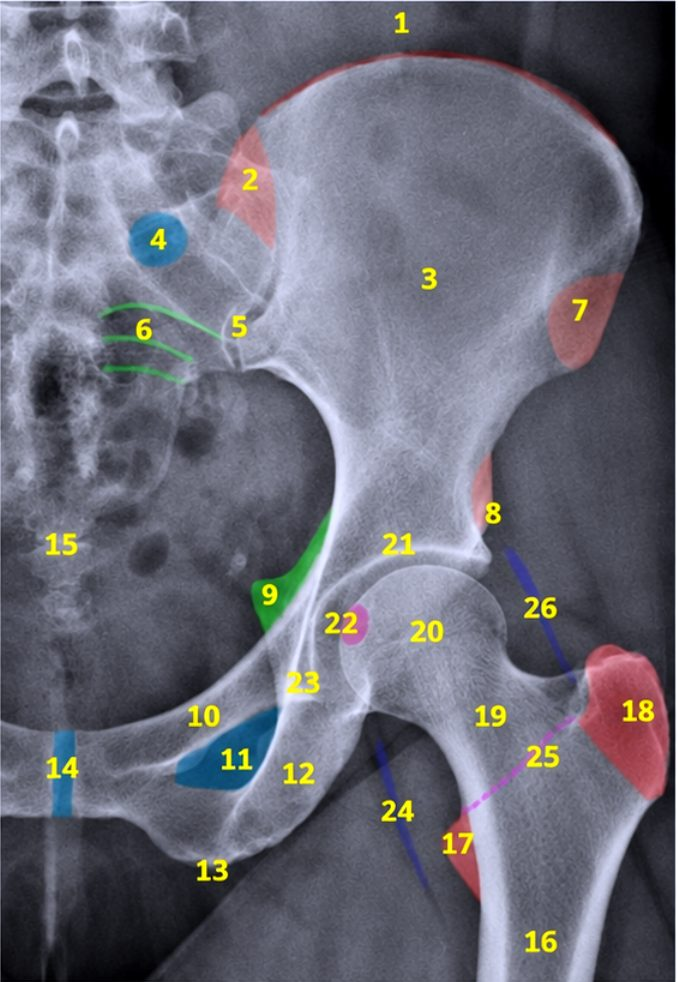
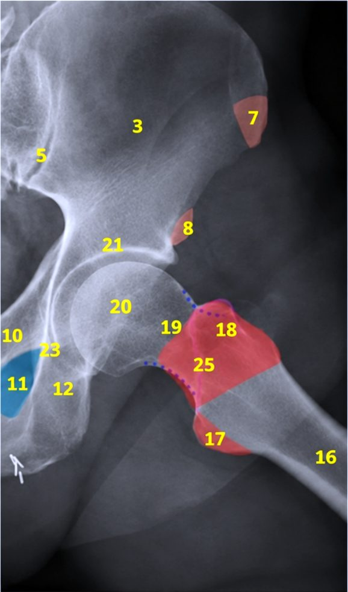
- • 1. iliac crestالعرف الحرقفي
- • 2. posterior superior iliac spineالشوكة الحرقفية الخلفية العلوية
- • 3. iliumالحرقفة
- • 4. anterior sacral foraminaالثقوب العجزية الأمامية
- • 5. sacroiliac jointالمفصل العجزي الحرقفي
- • 6. sacral arcuate linesالخطوط العجزية القوسية
- • 7. anterior superior iliac spineالشوكة الحرقفية الأمامية العلوية
- • 8. anterior inferior iliac spineالشوكة الحرقفية الأمامية السفلية
- • 9. ischial spineالشوكة الإسكية
- • 10. superior pubic ramusالفرع العاني العلوي
- • 11. obturator foramenالثقبة السدّادية
- • 12. ischiumالإسك
- • 13. ischial tuberosityالحدبة الإسكية
- • 14. symphysis pubisالارتفاق العاني
- • 15. coccyxالعصعص
- • 16. femurعظم الفخذ
- • 17. lesser trochanterالمدوّر الصغير
- • 18. greater trochanterالمدوّر الكبير
- • 19. femoral neckعنق عظم الفخذ
- • 20. femoral headرأس عظم الفخذ
- • 21. acetabulumالحُقّ
- • 23. fovea centralisالنُّقرة المركزية
- • 23. Koehler's teardropدمعة كولر
- • 24. psoas fat padالوسادة الدهنية للعضلة القطنية
- • 25. intertrochanteric crestالعرف بين المدوّرين
- • 26. gluteal fat padالوسادة الدهنية الإلوية
المعالم التشريحية للوركAnatomic Landmarks of the Hip
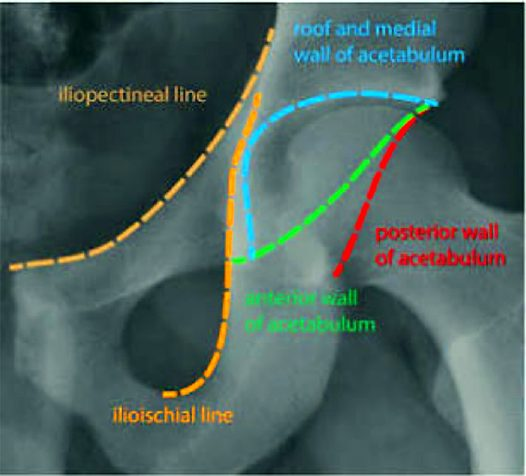
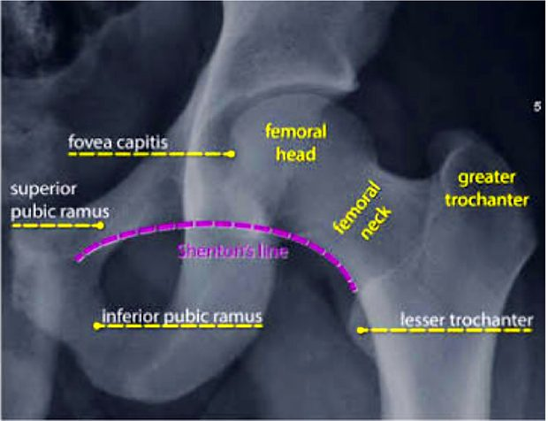
المعالم التشريحية للوركAnatomic Landmarks of the Hip
Anteroposterior pelvic radiograph
صورة شعاعية أمامية خلفية للحوض
- 1. Iliopectineal lineالخط الحرقفي العاني
- 2. Ilioischial lineالخط الحرقفي الإسكي
- 3. Acetabular roof lineخط سقف الحُقّ
- 4. Acetabular teardropدمعة الحُقّ
- 5. Posterior rim of acetabulumالحافة الخلفية للحُقّ
- 6. Anterior rim of acetabulumالحافة الأمامية للحُقّ
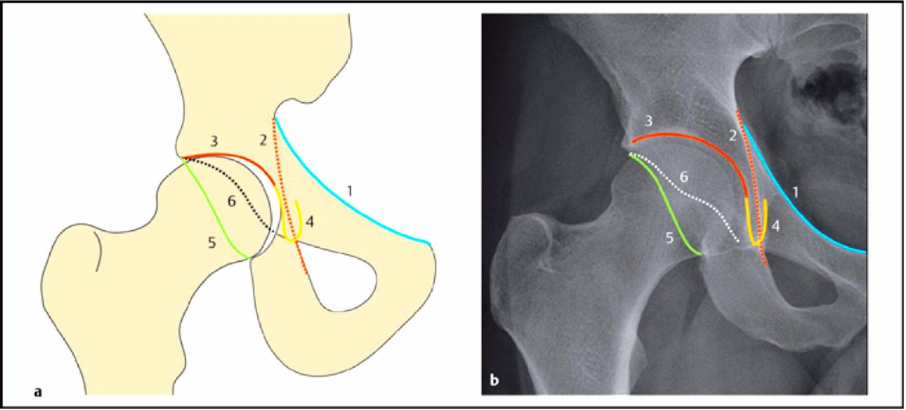
- • a. Schematic drawingأ. رسم تخطيطي
- • b. Anteroposterior pelvic radiographب. صورة شعاعية أمامية خلفية للحوض
زاوية المركز–الحافة الجانبيةLateral Center–Edge Angle (LCEA)
زاوية المركز–الحافة الجانبيةLateral Center–Edge Angle (LCEA)
AP pelvic radiograph • Assesses lateral acetabular coverage of the femoral head
صورة شعاعية أمامية خلفية للحوض • تقيّم التغطية الجانبية للحُقّ لرأس عظم الفخذ
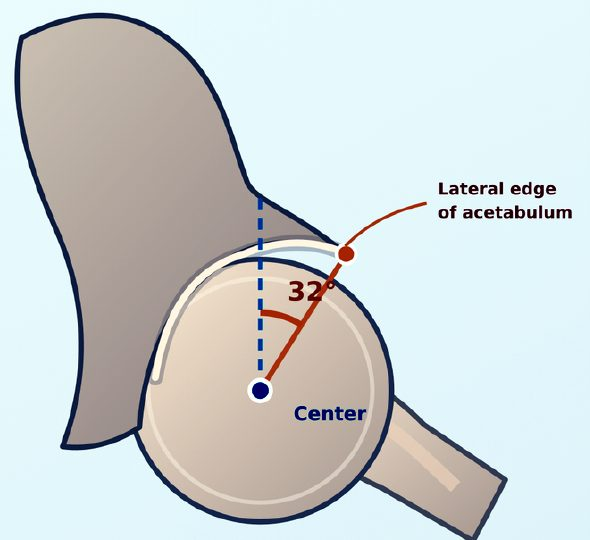
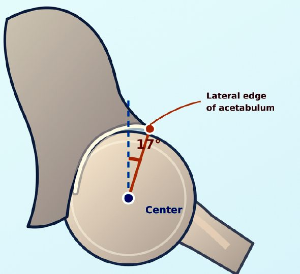
- • Normal coverage: 32°تغطية طبيعية: 32°
- • Acetabular dysplasia: 17°خلل تنسّج الحُقّ: 17°
- • Adequate lateral coverage · 25–40°تغطية جانبية كافية · 25–40°
- • Reduced coverage · below 20°تغطية ناقصة · أقل من 20°
How to measure: draw a vertical line through the femoral head center and a second line to the acetabular edge.
طريقة القياس: ارسم خطاً عمودياً يمرّ بمركز رأس عظم الفخذ، وخطاً ثانياً إلى حافة الحُقّ.
- • Vertical referenceخط مرجعي عمودي
- • Center-to-edge lineخط من المركز إلى الحافة
- • 20–25° = borderline · Above 40° = possible overcoverage20–25° = حدّي · أكثر من 40° = تغطية زائدة محتملة
خط شنتونShenton Line
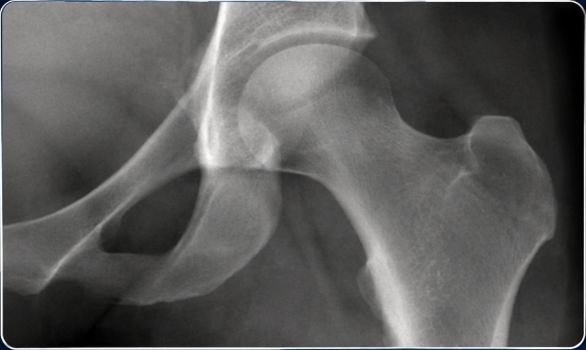
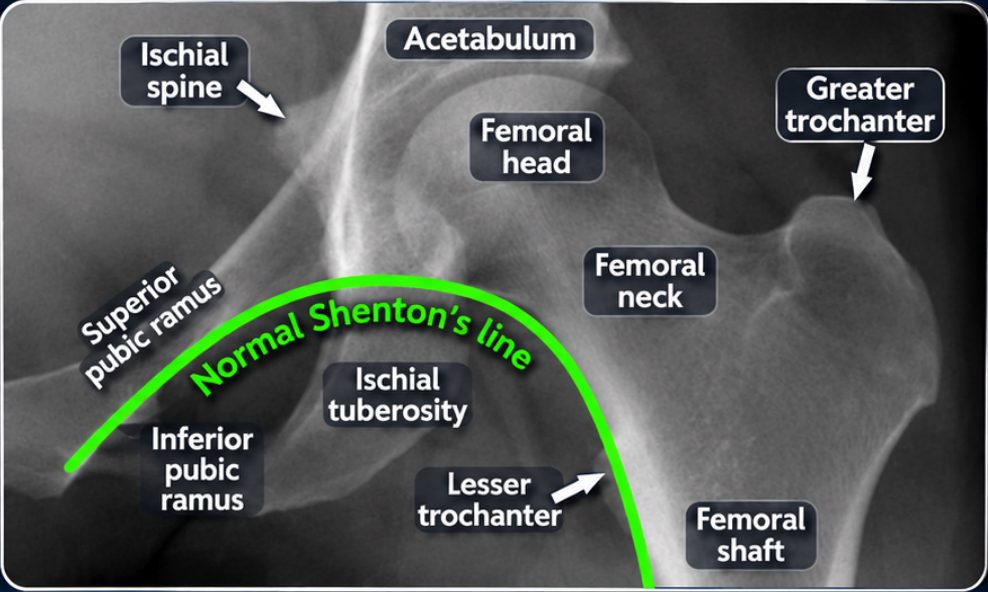
خط شنتون – النقاط الرئيسةShenton Line – Key Points
التعريفDefintion
Smooth, continuous curved line along the inferior border of the superior pubic ramus and inferomedial border of the femoral neck.
خط منحنٍ أملس ومتواصل يمتد على الحافة السفلية للفرع العاني العلوي والحافة السفلية الإنسية لعنق عظم الفخذ.
الطبيعيNormal
Smooth and uninterrupted.
أملس وغير منقطع.
انقطاعه يدلّ علىDisruption indicates
- • Developmental dysplasia of the hip (DDH).خلل التنسّج النمائي للورك (DDH).
- • Femoral neck fracture.كسر عنق عظم الفخذ.
- • Excessive external rotation (without femoral head displacement).دوران خارجي مفرط (دون إزاحة رأس عظم الفخذ).
خلع الورك الخلقيCongenital Hip Dislocation (DDH)
خلع مفصل الوركDislocation of the Hip Joint
أ- خلع الورك الخلقي (DDH)A- Congenital Hip Dislocation (DDH)
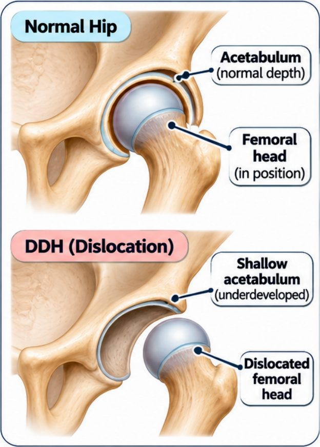
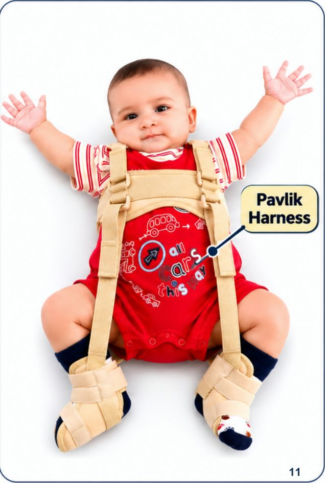
السببCause
- • Shallow acetabulum due to abnormal development in utero.حُقّ ضحل بسبب نمو غير طبيعي داخل الرحم.
الملامح السريريةClinical Features
- • Limited hip abduction.محدودية تبعيد الورك.
- • Limb length discrepancy (affected limb shorter).اختلاف طول الطرفين (الطرف المصاب أقصر).
- • Asymmetrical thigh or gluteal folds.عدم تناظر ثنيات الفخذ أو الإلية.
العلاجTreatment
- • Pavlik harness: Maintains femoral head in the acetabulum, promoting normal development.حزام بافليك: يُبقي رأس عظم الفخذ داخل الحُقّ مما يعزّز النمو الطبيعي.
- • Surgery: If conservative treatment fails.الجراحة: إذا فشل العلاج المحافظ.
خلع الورك المكتسبAcquired Hip Dislocation
ب- خلع الورك المكتسبB- Acquired Hip Dislocation
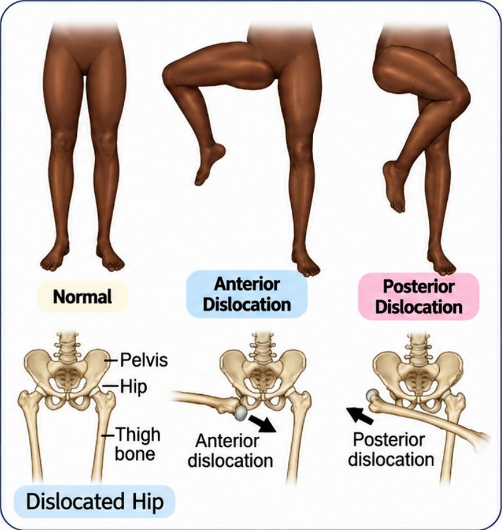
- • Causes: Trauma or complication of hip arthroplasty.الأسباب: الرضح أو أحد مضاعفات رأب مفصل الورك.
1) الخلع الخلفي (90%)Posterior Dislocation (90%)
- • Most common type.النوع الأشيع.
- • Mechanism: Femoral head displaced posteriorly through the weak posterior-inferior capsule.الآلية: ينزاح رأس عظم الفخذ إلى الخلف عبر الكبسولة الخلفية السفلية الضعيفة.
- • Clinical Features: Shortened, internally rotated limb.الملامح السريرية: طرف مقصَّر ومدوَّر إلى الداخل.
- • Complication: Sciatic nerve injury (10–20%).المضاعفة: إصابة العصب الوركي (10–20%).
- • Associated fractures: Femoral head and posterior acetabular wall.الكسور المرافقة: رأس عظم الفخذ والجدار الخلفي للحُقّ.
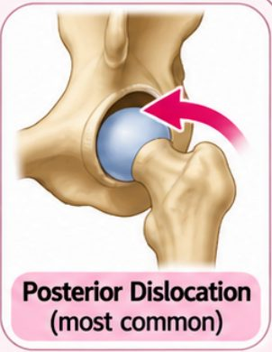
2) الخلع الأمامي (نادر)Anterior Dislocation (Rare)
- • Mechanism: Forced extension, abduction and external rotation.الآلية: بسط وتبعيد ودوران خارجي قسري.
- • Displacement: Femoral head moves anteriorly, usually inferiorly to the acetabulum.الإزاحة: يتحرك رأس عظم الفخذ إلى الأمام، وعادة أسفل الحُقّ.
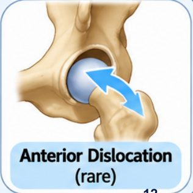
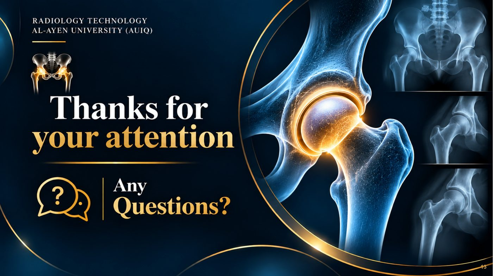
المحاضرة مسموعة
نص الأستاذ بالإنكليزي مثل الأصل · 9.4 دقيقة. اضغط أي جملة تسمعها، أو مصطلح منقّط تسمع لفظه ومعناه.
Introduction & Joint Checklistمقدمة وقائمة فحص المفصل
Introduction & Joint Checklist
WHAT SHOULD WE KNOW ABOUT ANY JOINT?
A simple anatomy & radiology checklist
Type of joint: How the joint is classified.
Articulating bones: The bones that meet to form the joint.
Articular surfaces: The bone surfaces in contact at the joint.
Capsule & ligaments: Tissues that enclose and support the joint.
Movements: The directions the joint can move.
Stability: Features that keep the joint in place.
Radiological views & normal alignment: How the joint normally appears on imaging.
Types of Jointsأنواع المفاصل
Types of Joints
TYPES OF JOINTS – KEY POINTS
1. Fibrous Joints
Connected by fibrous tissue.
Movement: Little or none.
Example: Skull sutures.
2. Cartilaginous Joints
Connected by cartilage.
Movement: Slight.
Example: Pubic symphysis.
3. Synovial Joints
Have a synovial fluid-filled cavity.
Movement: Freely movable.
Example: Hip joint.
SYNOVIAL JOINT TYPES & EXAMPLES
Pivot joint: Example: C1–C2 (atlantoaxial)
Hinge joint: Example: Elbow
Saddle joint: Example: Thumb CMC joint
Condyloid joint: Example: Wrist (radiocarpal)
Plane joint: Example: Intertarsal joints
Ball-and-socket: Example: Hip joint
Hip Joint – Anatomy & Key Pointsمفصل الورك: التشريح والنقاط الرئيسة
Hip Joint – Anatomy & Key Points
Hip Joint – Key Points
Type: Ball-and-socket synovial joint.
Articulation: Femoral head + Acetabulum.
Main functions: Stability and weight-bearing.
Articulating Surfaces
Acetabulum: Cup-shaped cavity of the pelvis.
Acetabular labrum: Fibrocartilage that deepens the acetabulum.
Femoral head: Hemispherical, fits into the acetabulum.
Articular cartilage: Thicker in weight-bearing areas.
Joint Capsule Attachments
Proximally: Acetabular rim.
Distally:
Anterior → Intertrochanteric line.
Posterior → Femoral neck.
Capsule of the Hip Jointكبسولة مفصل الورك
Capsule of the Hip Joint
CAPSULE OF THE HIP JOINT
HIP CAPSULE – KEY POINTS
Definition: Strong fibrous capsule surrounding the hip joint.
Attachments: Acetabulum → Femoral neck.
Function: Provides stability while allowing movement.
TWO LAYERS
Fibrous layer (outer): Thick, strong connective tissue for stability.
Synovial membrane (inner): Produces synovial fluid for lubrication and cartilage nutrition.
Hip Joint Ligamentsأربطة مفصل الورك
Hip Joint Ligaments
HIP JOINT LIGAMENTS – KEY POINTS
Main Function: Reinforce the joint capsule and increase hip stability.
1. INTRACAPSULAR
Ligament of Head of Femur (Ligamentum Teres)
Attachment: Acetabular fossa → Fovea of femoral head.
Contains: Branch of obturator artery (minor blood supply).
A. ILIOFEMORAL
Attachment: AIIS → Intertrochanteric line.
Shape: Y-shaped.
Reinforces: Anterior joint capsule.
Function: Prevents hyperextension.
Key Fact: Strongest hip ligament.
B. PUBOFEMORAL
Attachment: Superior pubic ramus → Intertrochanteric line.
Shape: Triangular.
Reinforces: Anterior and inferior joint capsule.
Function: Limits excessive abduction and extension.
C. ISCHIOFEMORAL
Attachment: Ischium → Greater trochanter.
Shape: Spiral.
Reinforces: Posterior joint capsule.
Function: Prevents hyperextension and stabilizes the femoral head.
Radiological Featuresالملامح الشعاعية
Radiological Features
Radiological Features
1. iliac crest
2. posterior superior iliac spine
3. ilium
4. anterior sacral foramina
5. sacroiliac joint
6. sacral arcuate lines
7. anterior superior iliac spine
8. anterior inferior iliac spine
9. ischial spine
10. superior pubic ramus
11. obturator foramen
12. ischium
13. ischial tuberosity
14. symphysis pubis
15. coccyx
16. femur
17. lesser trochanter
18. greater trochanter
19. femoral neck
20. femoral head
21. acetabulum
23. fovea centralis
23. Koehler's teardrop
24. psoas fat pad
25. intertrochanteric crest
26. gluteal fat pad
Anatomic Landmarks of the Hipالمعالم التشريحية للورك
Anatomic Landmarks of the Hip
Anatomic Landmarks of the Hip
Anteroposterior pelvic radiograph
Iliopectineal line
Ilioischial line
Acetabular roof line
Acetabular teardrop
Posterior rim of acetabulum
Anterior rim of acetabulum
a. Schematic drawing
b. Anteroposterior pelvic radiograph
Lateral Center–Edge Angle (LCEA)زاوية المركز–الحافة الجانبية
Lateral Center–Edge Angle (LCEA)
Lateral Center–Edge Angle (LCEA)
AP pelvic radiograph • Assesses lateral acetabular coverage of the femoral head
Normal coverage: 32°
Acetabular dysplasia: 17°
Adequate lateral coverage · 25–40°
Reduced coverage · below 20°
How to measure: draw a vertical line through the femoral head center and a second line to the acetabular edge.
Vertical reference
Center-to-edge line
20–25° = borderline · Above 40° = possible overcoverage
Shenton Lineخط شنتون
Shenton Line
Shenton Line – Key Points
Defintion
Smooth, continuous curved line along the inferior border of the superior pubic ramus and inferomedial border of the femoral neck.
Normal
Smooth and uninterrupted.
Disruption indicates
Developmental dysplasia of the hip (DDH).
Femoral neck fracture.
Excessive external rotation (without femoral head displacement).
Congenital Hip Dislocation (DDH)خلع الورك الخلقي
Congenital Hip Dislocation (DDH)
Dislocation of the Hip Joint
A- Congenital Hip Dislocation (DDH)
Cause
Shallow acetabulum due to abnormal development in utero.
Clinical Features
Limited hip abduction.
Limb length discrepancy (affected limb shorter).
Asymmetrical thigh or gluteal folds.
Treatment
Pavlik harness: Maintains femoral head in the acetabulum, promoting normal development.
Surgery: If conservative treatment fails.
Acquired Hip Dislocationخلع الورك المكتسب
Acquired Hip Dislocation
B- Acquired Hip Dislocation
Causes: Trauma or complication of hip arthroplasty.
Posterior Dislocation (90%)
Most common type.
Mechanism: Femoral head displaced posteriorly through the weak posterior-inferior capsule.
Clinical Features: Shortened, internally rotated limb.
Complication: Sciatic nerve injury (10–20%).
Associated fractures: Femoral head and posterior acetabular wall.
Anterior Dislocation (Rare)
Mechanism: Forced extension, abduction and external rotation.
Displacement: Femoral head moves anteriorly, usually inferiorly to the acetabulum.
كل أسئلة المحاضرة: السؤال إنكليزي وتحته عربي، وكل خيار بلغتين، والجواب الصحيح معلّم ويّاه «ليش صح» · 0.4 MB
قراءة الأسئلة تحميلاضغط أي مصطلح منقّط تسمع لفظه ومعناه.